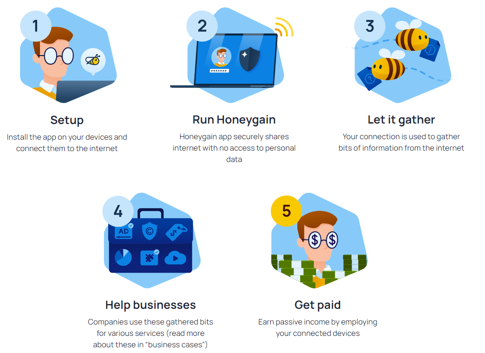

Earn Money Using Honey Gain
.
What is HoneyGain
Click Here to Download . HoneyGain is a crowdsourced network company that lets other businesses to gather information, data intelligence and perform market and business research. It’s available to download on Android and Windows, and soon will be available for iOS devices. The simple function behind Honeygain is you get paid for sharing your unused internet and the more devices you have this app installed on, the more you’ll make.
Connected to the internet
As a user all you have to do is go to Google Play and download the app, or go to Honeygain.com and sign up for a new account. Data scientists uses Honeygain’s platform to connect to the internet and Honeygain manages all these connections with strict safeguards to protect all these connections. The data scientists then use your unused data for their market and research purposes. You’ll know your app is working when you’re using Android, you’ll see a small, green notification in the notification bar, while the one on Windows, you just hover over the little bee icon in your notification tray. Again, the more devices you have this app on, the more money you’ll make. You can use up to 5 devices on a single network at the same time, but to have the best revenue potential, you should have 1 device per IP address. They don’t limit the number of devices connected to your account but they do suggest spreading them across several internet addresses for effectiveness.
This is the thing that makes its clients search for approaches to get to Chegg for nothing. All things considered it is conceivable to see Chegg answers free of charge! You should simply to peruse the strategies we have appeared here and attempt them yourself. I would enthusiastically suggest that you should attempt our free chegg answer open assistance solely accessible to all TechLaCarte perusers and clarify chegg answers in practically no time!
The ways to make money using HoneyGain
There are 2 ways to make money on HoneyGain. The first is by installing the app. Currently, there’s only an Android and a Windows app.They’re currently working on an iOS one. For example, if you have an android phone and a Windows laptop like I do, then download it on both of them for twice as many earnings. The other way to earn money is by referring friends. You can invite your friends with your own personalized link and 10% of their daily earnings will be added to your account. If your referral reaches $50 a month you earn an extra $5! You can share your link on Facebook, Twitter, Email, or copying and pasting it anywhere.